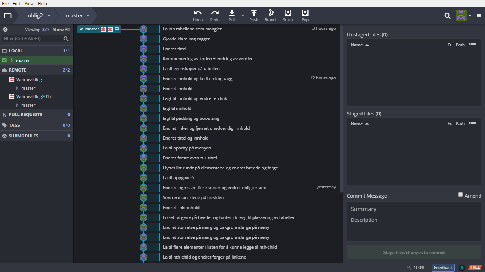

Git og Github
Poenget med Git i seg selv er å holde styr på hvilke versjoner du har opprettet av en fil i tilfelle du vil gå tilbake til tidligere endringer. Man kan sammenligne Git som Apple's Time Machine for kodefiler. Git ble grunnlagt av Linus Torvald i 2005; samme person som skapte de første versjonene av Linux i 1991. GitHub ble grunnlagt i 2008 av Tom Preston-Werner, Chris Wanstrath og PJ Hyett.
Forskjellen mellom Git og Github er at Git holder styr på de forskjellige versjonene av filene du jobber på. Du kan også dele de med andre om man er på samme nettverk og har konfigurert systemene riktig. Det er altså mulig å bruke Git uten Github. Grunnen til dette er at Github bare supplementerer Git ved å legge til online backup og en felles plattform for å dele koden din med andre. Fordelen ved å bruke Github i tillegg til Git er at flere kan jobbe på de samme dokumentene over internett.
Det er også flere andre fordeler ved å bruke begge samtidig. Man kan lage egne forgreninger slik at man kan arbeide uforstyrret og ikke overskrive andre sine endringer. Når man er ferdig kan man enkelt sammenflette filene til samme stamme. Alternativet er å jobbe via skystjenester, som Dropbox eller Google Drive, men her har man bare en versjon pr fil. Med Git og GitHub så har man full kontroll over endringer og kan sammenligne filer om man har jobbet på samme dokument. Selv bruker jeg en kombinasjon av disse; onedrive til å synkronisere filer og GitKraken til å holde styr på filversjonene. Dette gjør at jeg ikke trenger å tenke på å hente de siste versjonene som ligger på serveren før du laster opp filene du har endret; Onedrive synkroniserer filene automatisk.
Det er flere måter å bruke Git på. Man kan benytte et eget program, f.eks. GitKraken eller GitHub Desktop, eller bruke kommandolinjen på pcen din. Det siste alternativet krever at du husker kommandoene til Git og er komfortabel med å ikke bruke GUI.
Nettleseren "Brave", som ble lansert 21. juli 2017, ble den første som inkluderte GitHub som en standard søkemotor.